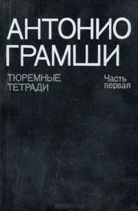
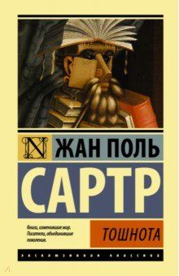

Неомарксизм возник в середине XX века как развитие идей классического марксизма, адаптированных к изменившимся социальным и экономическим условиям. Основоположниками направления считаются Антонио Грамши, Герберт Маркузе, Макс Хоркхаймер и Теодор Адорно. Они стремились переосмыслить марксистскую теорию, акцентируя внимание на роли культуры, идеологии и государства в поддержании капиталистической системы.
Влияение на политику
Неомарксисты оказали значительное влияние на социальные движения и политическую мысль второй половины XX века. Их идеи вдохновляли протесты против капитализма, империализма и авторитаризма, включая студенческие движения 1960-х годов. Важным вкладом стало изучение роли государства как относительно автономного института, который поддерживает капитализм через политику компромиссов между классами
Книги по неомарксизму
•Антонио Грамши: "Тюремные тетради"

"Тюремные тетради" — это сборник философских записей Антонио Грамши, итальянского мыслителя и марксиста, написанный им в заключении (1929–1935). Эти тетради стали важнейшим трудом по политической теории, культуре и философии.
•Герберт Маркузе: "Одномерный человек"
•Теодор Адорно и Макс Хоркхаймер: "Диалектика Просвещения"
Экзистенциализм
Экзистенциализм — философское направление XX века, сосредоточенное на уникальности человеческого существования, свободе выбора и ответственности. Основоположниками считаются Жан-Поль Сартр, Мартин Хайдеггер и Альбер Камю. Сторонники экзистенциализма подчеркивали важность личного опыта и эмоциональной глубины в понимании бытия
Логотерапия Виктора Франкла
Виктор Франкл, австрийский психиатр и философ, развил логотерапию — направление экзистенциальной психотерапии. Основная идея логотерапии заключается в том, что поиск смысла жизни является ключевым мотивом человеческого поведения. Франкл разработал свою теорию после собственного опыта заключения в нацистских концлагерях, описанного в его книге "Сказать жизни «Да!»: психолог в концлагере".
Книги по экзистенциализму

"Тошнота" (1938) — философский роман, написанный в жанре дневника. Главный герой, Антуан Рокантен, исследует свою внутреннюю жизнь и приходит к осознанию абсурдности существования. Он испытывает чувство тошноты — не просто физической, а экзистенциальной — когда осознает бессмысленность вещей и собственного бытия.
"Миф о Сизифе" (1942) — философский эссе Альбера Камю, в котором он исследует понятие абсурда. Камю утверждает, что жизнь лишена высшего смысла, но человек всё же должен находить в ней ценность.
Главный образ — Сизиф, герой древнегреческого мифа, обречённый вечно катить камень в гору. Камю видит в этом метафору человеческого существования: несмотря на бессмысленность, человек может принять абсурд и жить осознанно, наслаждаясь самим процессом.
Главное послание книги — “Надо представить себе Сизифа счастливым”. Приняв абсурд, человек освобождается и находит внутреннюю силу жить.
•Альбер Камю: "Миф о Сизифе", "Чума"
•Виктор Франкл: "Сказать жизни «Да!»
"Сказать жизни "Да!": психолог в концлагере" — автобиографическая книга Виктора Франкла, в которой он делится своим опытом переживания нацистских концлагерей и формулирует основы логотерапии — направления в психотерапии, основанного на поиске смысла жизни.